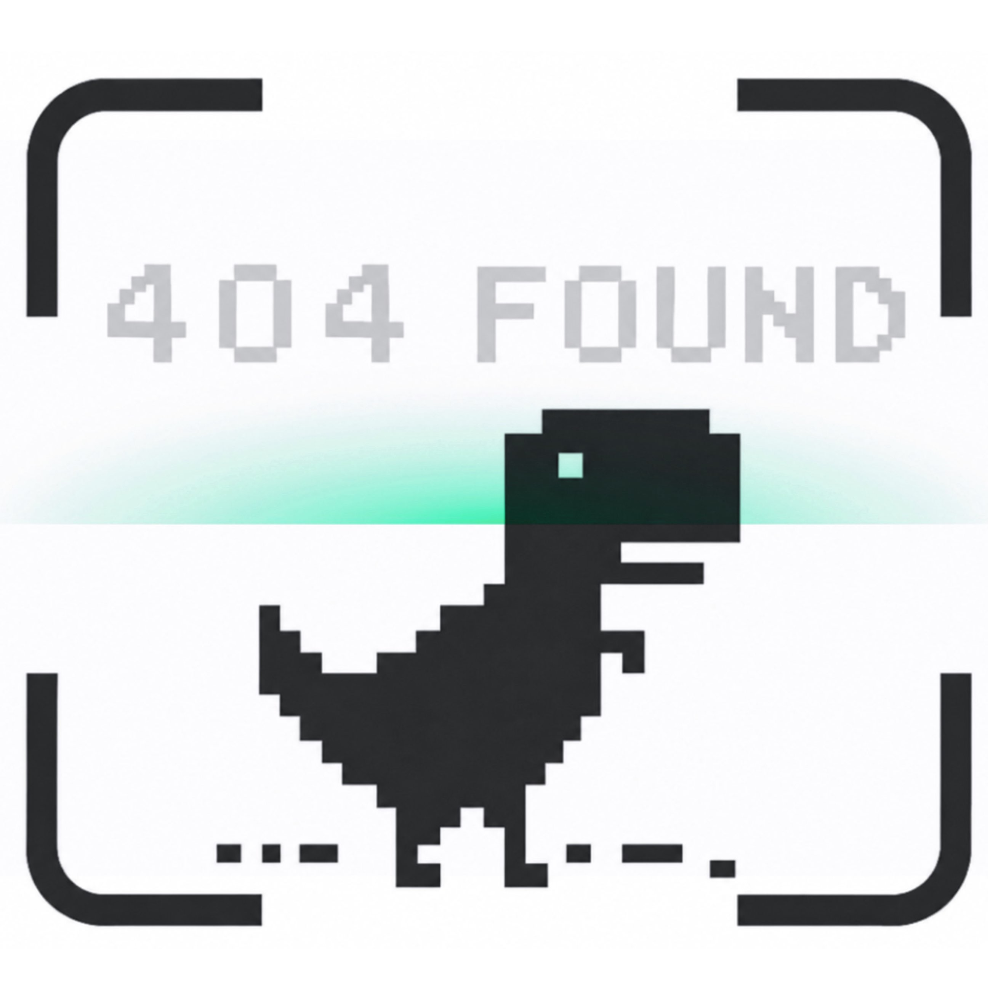

404 FOUND OCR · PRODUCT GUIDE
把图片，
跑成文字。本地 PaddleOCR 图片与文档识别工具
想从课件、扫描件或截图里取出文字，不必再一行行手敲。
404 Found OCR 会在本机完成
图片导入、预处理、OCR 识别、结果编辑和历史查询。
读完这本用户手册，你会使用按钮、理解流程。
更棒的是：可以认识那只一直在界面里忙活的像素小恐龙！
01 / OVERVIEW
产品概览
先花一分钟认识404 Found OCR：能读什么、数据放在哪儿，以及两种识别模式该怎么选。
一份文件会依次经过导入、检查预览、可选编辑或预处理、PaddleOCR 识别，最后来到结果编辑、
SQLite 历史保存和导出。流程不绕，跟着界面走就好。
普通截图和清晰图片先用快速识别；遇到 PDF、复杂排版、标题段落或表格，再把任务交给深度识别。
离线说明：
OCR 推理、历史存储和查询都在本机完成。只有模型还没下载时，第一次启动可能需要联网获取
官方模型文件；下载完成后，就可以安心在本地使用了。
快速识别
- 适合截图、课堂资料和普通印刷体图片。
- 使用轻量 OCR 服务，在 CPU 上通常等得更短。
- 可执行整图识别、选区识别和批量图片识别。
- 导入 PDF 时，系统会自动切换到深度识别。
深度识别
- 适合 PDF、标题、段落、复杂版面和表格文档。
- 使用 PP-StructureV3，看得更细，也需要多一点耐心。
- PDF 会直接进入文档识别流程，不执行图片选区和手写预处理。
- CPU 推理可能会久一些，看看流程状态条，小恐龙会替你报进度。
02 / START
安装与启动
目前可按开发环境方式在本地运行；Windows 与 macOS 安装包已完成方案验证，即将开放下载。
开发环境启动
01 · 创建虚拟环境
$ python3.11 -m venv .venv
02 · Windows 激活
› .venv\Scripts\activate
03 · macOS 激活
› source .venv/bin/activate
04 · 安装依赖
$ python -m pip install -r requirements.txt
推荐启动方式
环境准备好后，从项目入口启动 GUI。这样 Windows CPU 的 oneDNN/MKLDNN 兼容配置会在 PaddleOCR 导入前正确生效。
python app.py

NO ENVIRONMENT SETUP · READY TO USE
不想配置环境？安装包即将上线
macOS抢先体验，Windows积极适配中。无需准备 Python、创建虚拟环境或手动安装依赖，选择对应系统版本即可使用。
03 / WORKFLOW
从图片到文字的完整流程
不用记住复杂步骤，照着真实操作顺序就可以轻松理解。
启动程序并选择识别模式
在启动页点击“快速识别”或“深度识别”；也可不进入工作台，直接打开“历史查询”。
导入图片或 PDF
怎么顺手怎么来：点击“添加图片/添加文档”、把文件直接拖进窗口，或复制图片后按 Ctrl/Command + V。
检查并编辑当前图片
通过上一张、下一张和缩略图切换文件；必要时旋转 90°、水平镜像或上下镜像。
选择识别范围与预处理
整图识别无需框选；局部文字可在预览区拖拽框选。低质量图片可打开预处理并自由调整处理顺序。
开始识别
点击“识别整图/识别文档”，或对已框选区域点击“识别选区”；图片载入后也可按Enter直接开始。
核对、编辑与导出结果
在右侧文本区直接修改内容，可复制、导出TXT、保存编辑文本或切换排版视图。
历史查询与记录管理
输入关键词，组合文件类型、识别模式和日期范围筛选，查看缩略图、完整文本或删除记录。
05 / SHORTCUTS
快捷操作与特殊交互
除了逐个点按钮，还可以拖拽、粘贴和使用键盘快捷操作。
06 / VISUAL DESIGN
精彩前端设计展示
除了把文字认出来，我们也希望等待和操作的过程看起来舒服、用起来顺手。
COLOR SYSTEM
同源浅色像素配色
说明书直接使用项目主题色：纸张底色、纯白面板、黑色主色、灰色边框与低饱和状态色。
COMPONENT LANGUAGE
阶梯边框与切角按钮
面板采用正交阶梯像素边框，按钮四角切除小方块，使启动页、工作台、弹窗和滚动条拥有一致的视觉语言。
INTERACTION HIERARCHY
主操作集中，辅助设置收纳
添加、识别、选区等主任务集中在顶部；预处理、历史和小恐龙作为次级入口，减少主界面拥挤。
用户在任意时刻都能看见当前模式、当前图片、识别状态和最近保存信息。
启动页截图
主工作台截图
历史查询截图
设置弹窗截图
预处理弹窗截图
为什么这样设计
浅色像素风让工具保持轻快，也给长时间阅读留出足够的呼吸感。黑白主色负责把操作重点说清楚， 小恐龙则把启动、识别、等待和完成串在一起。遇到耗时任务时，状态条和动画会持续回应， 让等待不再像面对一个毫无动静的窗口。
07 / DINO GAME
小恐龙游戏与桌面宠物设计
小恐龙不只是站在界面里卖萌，它还贯穿启动、识别、等待和最小化状态，是一位会报告进度的像素同事。
HOME SCENE
首页互动场景
鼠标悬停在快速识别卡片时，小恐龙进入快速奔跑；悬停在深度识别卡片时，小恐龙以跳跃动作回应复杂任务。首页还提供 J 加速、K 跳跃的互动提示。
MINI GAME
独立小游戏窗口
用户可在工作台点击“小恐龙窗”，使用 J/D/右方向键加速，K/W/上方向键/空格跳跃。深度识别或批量任务需要等待时，不妨让小恐龙先跑两圈。
STATUS ROLE
流程状态角色
工作台流程状态条使用小恐龙运动状态表达空闲、处理中、完成等阶段，让技术状态更直观，也让整个产品保持一致叙事。
DESKTOP PET
最小化桌面宠物
主窗口最小化后，小恐龙可以作为置顶桌面入口。用户可连续分多批拖入图片或 PDF：每批按模式串行识别，整批完成后提示可关闭或自动收起，恢复为普通宠物后仍能直接接收下一批，无需先返回主工作台。新进程只处理新增或结果已失效的文件，历次图片与结果会保留在对应识别窗口。
PIXEL DINO · 网页交互预览
场景比例、移动速度与跳跃参数按项目启动页 PixelScene 对齐；使用 J 加速，K 跳跃。
RUN 0000
点击“开始游戏”后，小恐龙才会开始跑。
桌面悬浮小恐龙截图
独立小游戏窗口截图
08 / HOW IT WORKS
用户操作背后的工作原理
按下一次识别，会发生什么？
输入与校验文件选择 / 拖拽 / 粘贴
格式、大小、像素与 PDF 可读性校验
格式、大小、像素与 PDF 可读性校验
→
编辑与预处理旋转 / 镜像 / 选区
灰度化 / 二值化 / 中值滤波
灰度化 / 二值化 / 中值滤波
→
OCR 与结果管理PP-OCRv6 small / PP-StructureV3
文本展示、SQLite 保存、历史查询
文本展示、SQLite 保存、历史查询
批量识别：
多张图片会按照 FIFO 顺序排队。单图交给后台线程，批量任务则在独立进程中逐张回传进度，这样 Tkinter 主界面不会因为忙着识别而“愣住”。
09 / LIMITS
当前版本使用边界
正式开工前可以先扫一眼这里。哪些文件能处理、哪里需要多等一会儿、哪些能力还在路上，都写清楚了。
输入限制
支持 JPG、JPEG、PNG、BMP 图片和 PDF 文档。单个文件不超过 200 MB，单张图片总像素不超过 5 亿。
PDF 限制
PDF 只进入深度识别，不支持图片旋转、镜像、选区裁剪或手写图像预处理。
性能提示
PP-StructureV3 在 CPU 上可能需要多一点时间。批量与深度识别时看着流程状态条即可，小恐龙还在工作，就先别连续敲识别按钮。
结果校对
模糊、倾斜、复杂背景和特殊字体都会影响准确率。重要材料别急着交卷，人工核对后再保存或导出更稳妥。
当前导出
目前可以复制文字或导出 TXT。JSON、标注图片和结构化表格富文本还在后续计划里，暂时先别在菜单里找它们。
任务控制
批量任务会逐张回传进度；任务取消、每张图片的详细耗时和单图线程取消还在继续完善。
10 / FAQ
常见问题
导入 PDF 后为什么自动变成深度识别？
PDF 由 PP-StructureV3 文档服务处理，所以快速模式收到 PDF 后会自动切到深度识别。模式切好以后，再点击“识别文档”即可。
为什么导入文件后没有立即开始识别？
我们把开始键留给你，是为了让你先检查文件、调整顺序、旋转镜像，或设置选区和预处理。准备妥当再识别，返工会少很多。
预处理应该全部打开吗？
不用。清晰图片直接识别通常就很好；光照不均时可试试自适应二值化，椒盐噪声较多时再用中值滤波。预处理开得太满，反而可能伤到笔画。
为什么深度识别等待时间较长？
深度模式要分析更完整的文档结构，在 CPU 上自然会比快速模式多花一些时间。等候时可以看看状态条，也可以打开小恐龙窗跑两圈。
修改后的文字会覆盖模型原文吗？
不会。点击“保存编辑文本”后，模型原文会好好留在数据库里，你修改后的版本也会单独保存，之后可以在历史详情中来回查看。
历史查询会重新消耗 OCR 时间吗？
不会。历史查询只是读取本地 SQLite 中已经保存的记录，不会再叫 PaddleOCR 重做一遍。